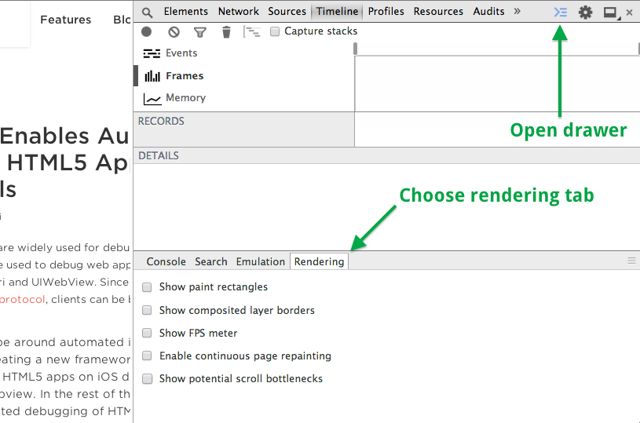

The background that we have added is all well and good, but it is a little boring! In this lesson we are going to add a parallax starfield. Sound good?
Parallax backgrounds give the appearance of 3 dimensions by 'tricking' the viewer into thinking that some parts of the background are far away and some parts are nearer.
So, as before, you will need to open up game.html in this folder and make sure you have this same file open in Chrome so that you can see what happens when we run the code.
Take a look at the parallax star field. Let's find out how to create it.
If you look at the code in game.html in this folder, you will see that we have added 2 new pieces of code. Let's look at them in detail.
Crafty.bind("EnterFrame", function() {
if (Crafty.frame() % 2 === 0) {
createStar();
}
});
Before we talk about "EnterFrame" in the above code, let's have a quick recap of what we know about animation. Remember that thing called FPS (Frames per second)? Well I'm going to show you how you can see the exact frame rate at anytime in your game. Open up the Chrome Dev Tools (that phrase should be becoming very familiar to you now!) and click on the 'Show drawer icon'. You can also press Esc as a shortcut to opening the drawer. This image might help (courtesy of Google):
Click on the checkbox that says FPS. You will then see something like this:
As you can see, your screen is rendering at around 50 FPS. That means the screen is being redrawn at 50 times every second. Not bad eh? It so happens that this is what we need for our animation. Now, this is where the "EnterFrame" function comes in. EnterFrame is a function that kicks off when Crafty is initialised. We don't have to do anything to make it happen. It just does! What we do have to do, however is 'hook' into this 'event'. Did we talk about events? We hook into it with the 'bind' function.
So, what is actually happening in the code above? Well, when we call Crafty.bind() we pass in 2 parameters. The first one is the name of the function that we want to hook into. In our case this is "EnterFrame". This means that every time Crafty runs the EnterFrame event, we will be told about it and even better than that, we will get a chance to do something about it.
The second parameter is the thing that we are going to do. It is a function. Take a minute to look at it. This function will be called every time EnterFrame is called. Let's take a look at what it does:
createStar();
Yep, that's what it does. It creates a star! Now - if EnterFrame is called 50 times a second, that means the createStar() function will be called 50 times every second as well. That's a lot of stars. But hang on, what is that line above that says:
if (Crafty.frame() % 2 === 0)
ASIDE: Take a look at the IF...ELSE statement.
This is a little mathematical operation that says something like 'Divide the frame # by 2 and check for a remainder. If there is no remainder ie. 0 then create a star. If there is a remainder then do nothing'. The upshot of this is that a star will be created every second frame ie. frame 2, 4, 6, 8....50
Make sense or clear as mud?
The next bit of code actually creates the star. We won't go through everything but I will explain what is going on at a high level and give you a chance to have a look through it and ask some questions. Please don't think you have to understand everything. At this stage, understanding just enough is enough. As you practice and learn the rest will come. Mostly what you need for programming is enthusiasm. Then you need to find a good teacher!
Take a look at the createStar() function:
function createStar() {
/* Generate a random number between 0 and 800, then add 50 to it */
var random_x = Math.floor((Math.random() * _screenWidth) + 50);
/* Set the rock size as a number between 0 and 3 */
var rock_size = Math.random() * 3;
/* Set the Red, Green and Blue color components. Note red is random and green/blue are both 128 */
var R = Math.ceil(Math.random() * 255);
var G = 128;
var B = 128;
/*
Create an entity (the star) with color, gravity...etc
Position it at: (x, y) with a width of w and height of h
Give it a color of R G B
Every time that the EnterFrame function is called, destroy the star if and only if it has
travelled more than the length of the screen
*/
Crafty.e('Drop, 2D, Canvas, Color, Solid, Gravity')
.attr({x: random_x, y: 33, w: rock_size, h: rock_size })
.color('rgb(' + R + ',' + G + ',' + B + ')')
.gravity()
.gravityConst(Math.random() * 0.03)
.bind("EnterFrame", function() {
if (this.y > _screenHeight) {
this.destroy();
return;
}
});
}
This time I have put the explanation for the code in the comments above to show you how commented code can be very useful. Just imagine for example that you were working on a game with a friend. You write the code for the createStar bit. A couple of weeks later, your partner has to make a change to this code because you are unavailable as you are on holiday in the USA. Now - if you haven't commented that code, he or she may not be able to understand it or at the very least it will take him/her a lot longer to understand it that it would have it you had commented it.
Let's take a few minutes to go through the code before we move on.
If you have time try to vary the createStar() function. You could change many things such as:
* How many stars are created per frame
* Star size and color
* Star position and speed